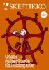
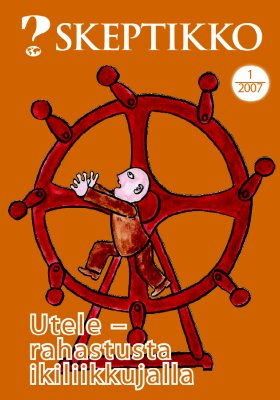
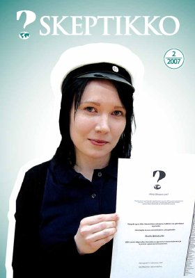
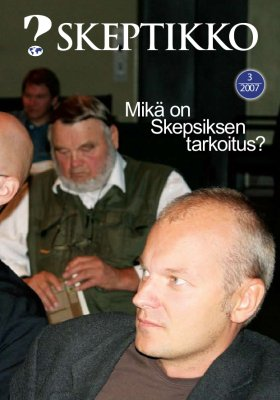
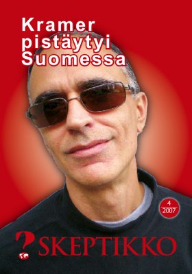

Skeptikko-lehti 2007
Ellei sinulla jo ole tietokoneellasi pdf-muodossa olevan tiedoston lukemiseen tarvittavaa
Acrobat Reader -ohjelmaa, saat sen ladattua maksutta tästä kuvakkeesta:

Skeptikko on Skepsis ry:n neljä kertaa vuodessa ilmestyvä jäsenlehti. Verkkoversiosta löydät lehtien sisällysluettelon ja yksittäisiä artikkeleita html-muodossa sekä kokonaiset lehdet pdf-muodossa.
  Skeptikko 1/2007
- Risto K. Järvinen: Pääkirjoitus
- Hannu Karttunen: Utele – rahastusta ikiliikkujalla
- Ada: Skepponen
- Barbara Forrest: Älykäs suunnittelija vai ei? ”Ruuvipuristinstrategia”
- Matias Aunola: Puheenjohtajan palsta
- Denis Galkin: Muutumme – oletko aivan varma?
- J-Files: Autolla Plutoon
- Denis Galkin: Minä näen – minä kokeilen – minä opin!
- Jussi K. Niemelä:
Kirjat: Daniel C. Dennett: Lumous murtuu – uskonto luonnonilmiönä - Kari Kivioja: PEAR-laboratorion taru päättyy
- Denis Galkin: So what?
- Jussi K. Niemelä:
Kirjat: Davidit ja Goljatit - Risto K. Järvinen: Rajailmiöille uusi tutkimusverkosto
 Skeptikko 2/2007
Kansikuva: Nils Mustelinin rahasto myönsi ensimmäisen stipendinsä Helsingin luonnontiedelukion ylioppilaalle Paula Räisäselle
 Skeptikko 3/2007
Kansikuva: Skepsiksen keskustelutilaisuudessa Tieteiden talolla kuultiin kommentteja mahdollisiin sääntömuutoksiin mm. kuvassa näkyviltä Arno Kotrolta ja Ilpo V. Salmelta.
- Risto K. Järvinen: Skepsiksen uudet kujeet
- Risto K. Järvinen: Minä, skeptikko: Jukka Maalampi
- Jussi K. Niemelä: Miten tulla hyväksi postmodernistiksi?
- Rainer Bunge, Jean-Marc Stoll, Benno Bucher: Tarkistuslistalla ihmelaitteiden kimppuun
- Ada: Skepponen
- Vesa Tompuri: Lukijan novelli: Elämä kummituksena
- Janne Oravisto: J-Files: Kolmannen asteen yhteys
- Matias Aunola: Puheenjohtajan palsta
- Mikael Nederström:
Kirjat: Sam Harris: Uskonto, terrori ja järjen tulevaisuus - Keskustelua
 Skeptikko 4/2007
Kaikkien artikkelien © Copyright 2007 Skeptikko-lehti ja kirjoittaja.
Kirjoitukset vapaasti siteerattavissa ja levitettävissä ei-kaupallisiin tarkoituksiin, lähteeksi mainittava kirjoittajan lisäksi Skeptikko-lehti numeroineen.


{kind=link}
{kind=link}
{kind=link}
{kind=link}